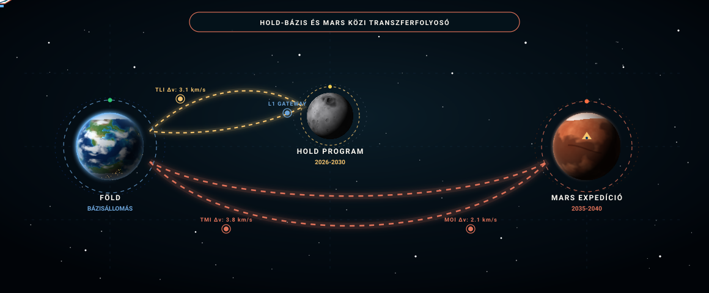

Űrkutatás
Waikiki még magasabbra tört, meg sem állt a csillagos égig, így a világ legfejlettebb gazdasági hatalma immár átvette a vezető szerepet az űrkutatás területén is. Nemzetünk a modern kor legambiciózusabb mélyűri programjaival a globális űrkutatás élvonalába tartozik.
Waikiki Nemzeti Űrállomás
Waikiki megteremtette az űrkutatás biztonságos bázisát. Előretolt helyőrségünk, a Waikiki Nemzeti Űrállomás (WNSS) a legmodernebb technológia felhasználásával készült. Az ott folyó kísérletek és kutatások pedig egyedülálló lehetőséget teremtenek a további innovációra.

A WNSS Tudományos Laboratórium
A Waikiki Nemzeti Űrállomás építése 2007-ben vette kezdetét, a központi mag 2012-ben állt pályára, az utolsó kutatómodul beillesztésével pedig 2018-ban vált teljessé. A több mint 200 milliárd dolláros beruházással megvalósult komplexum ma az emberiség történetének legnagyobb mesterséges orbitális létesítménye.
- Állandó személyzet12 asztronauta és kutató
- Pályamagasság420 km Föld körüli pálya
- EnergiaellátásTöbbgenerációs napelemtáblák
Kiindulópont a Naprendszerbe
A WNSS nem csupán kutatólaboratórium, hanem a jövőbeli mélyűri küldetések logisztikai központja. A tervek szerint innen indulhatnak majd a Holdat megkerülő, illetve a Marsra tartó űrhajók, az üzemanyag-utántöltést, a készletek feltöltését és a műszaki ellenőrzést követően.
- Dokkolóegységek6 univerzális dokkolókapu
- Küldetési profilHold- és Mars-expedíciók
- BővítésekFolyamatos korszerűsítés 2038-ig
Űrturizmus az Állomáson
2018-tól nem csak a hivatásos asztronautáké a kiváltság, hogy meglátogassák ezt a lélegzetelállító mérnöki remekművet. Bármely felkészült űrturista a fedélzetre léphet és űrsétán vehet részt, ami világszerte az elit élmények csúcsává vált. Eddig a királyi család hat tagja és 8 űrturista is járt már az állomáson.
- Első kereskedelmi út2018-as orbitális látogatás
- Program10 napos űrállomás és űrséta
- SzállítóeszközDragon kapszulák és űrsiklók
Hold Körüli Állandó Űrállomás
A WNSS rendkívüli sikere miatt a kormány a WSA és a NASA közös projektjeként egy másik, Hold körüli pályára állítandó állomás építését is tervezi a 2030-as évek második felében. Ez olyan súlytalanságban végzett kísérletek elvégzését teszi lehetővé, amelyekre a Föld közelében nincs lehetőség.
- Tervezett pályaHold körüli halópálya
- PartnerintézményekWSA és NASA közös fejlesztés
- CélkitűzésExtrém mélyűri kísérletek
Hold- és Mars-küldetések
A WSA kutatói a nemzetközi űrügynökségekkel és ipari partnerekkel karöltve a következő évtized legambiciózusabb mélyűri küldetéseit készítik elő. A mostani ciklusban a hangsúly a 2026 és 2030 közötti emberes Hold-programon van, de már folynak a 2035-2040-re tervezett Mars-expedíció előkészületei is.

A Nemzeti Hold-program
A Hold küldetés a nemzet legkiemelkedőbb stratégiai űrprogramja a 2026 és 2030 közötti időszakra. A WSA és a NASA közös tervei szerint a Saturn X rakétával végrehajtott tesztrepüléseket követően kerül sor a történelmi emberes holdraszállásra, majd pedig az állandó, autonóm kutatóbázis kiépítésére.
- Tervezett időkeret2026-2030 közötti fázisok
- Jelenlegi állapotTesztrepülések alatt
- Tervezett helyszínAitken-medence
Saturn X Rakétarendszer
A mélyűri küldetések és a Hold-program kulcsa a WSA és a Techno Industries által közösen megalkotott Saturn X szupernehéz hordozórakéta. A több mint 120 méter magas monstrum a valaha tervezett legerősebb űrhajózási eszköz, amely több mint 150 tonna terhet képes Föld körüli pályára juttatni.
- Méret120+ méter magas
- Teherbírás150 t LEO / 50 t Hold felé
- Fő alkalmazásHold-expedíciók
Emberes Mars-misszió
A WSA kutatóinak hosszú távú stratégiai célja, hogy 2035 és 2040 között embert juttassanak a Marsra, és biztonságosan vissza is hozzák a legénységet. A program a SpaceX fejlett mélyűri csillaghajó-technológiájára és a Hold körüli pályán végzett üzemanyag-vételezésre támaszkodik a bolygóközi út megvalósításához.
- Tervezett indítás2035-2040 közötti indítási ablak
- HordozórendszerInterplanetary Shuttle
- Fő feladatFelszíni kutatás
Marsi Bázisállomás
A Lockheed Martin által megálmodott koncepció szerint az asztronauták egy folyamatosan keringő bázisállomás és kapcsolódó leszállóegységek révén érik el a Marsot. Nem szükséges a nehéz lakómodulokat a felszínre vinni és újra felbocsátani, így az út lényegesen kevesebb üzemanyagot igényel.
- Kapacitás8 asztronauta (2 leszállóegység)
- EnergiaforrásNapelemek és palládium-reaktor
- ElőnyFenntartható bolygóközi logisztika
A Spirit II Marsjáró
Waikiki második marsjárója, a Spirit II 2018-ban indult útnak a negyedik bolygó felé. Megérkezése óta folyamatosan kőzetmintákat elemez, spektrometriás méréseket végez és páratlan részletességű felvételeket készít a marsi tájról, melyek elengedhetetlenek a jövőbeli emberes küldetések tervezéséhez.
- Indítás éve2018
- MűszerekKőzetelemzés és panorámakamerák
- Küldetés státuszaAktív működés
Kozmikus Megfigyelés és Űrtávcsövek
Az orbitális űrteleszkópoktól a Brazília tartomány hegyvidékein épülő földi rádióantennákig Waikiki a világegyetem legmélyebb titkait kutatja és idegen életformák nyomait keresi.
A Kepler Űrtávcső
Hatalmas fizikai mérete miatt a Kepler űrtávcsövet két különálló darabban állították Föld körüli pályára Delta III hordozórakétákkal, és 2017-ben a világűrben szerelték össze. A légköri zavaroktól mentes környezetből vizsgálja az exobolygókat és az Androméda-galaxist.
- Összeszerelés2017-es űrbéli dokkolás
- Hordozórakéták2x Delta III típusú rakéta
- Fő kutatási területExobolygók és távoli galaxisok
A Minas Gerais Rádióteleszkóp
Brazília tartományban, a Minas Gerais dombság lankái között épül a világ legnagyobb rádióteleszkópja. Elkészülésekor az univerzum máig ismeretlen szegleteit térképezi fel és rádiófrekvenciás jelek után kutatva földönkívüli életformák létezését keresi.
- ElhelyezkedésMinas Gerais, Brazília tartomány
- Antenna méreteA világ legnagyobb tányérantennája
- KüldetésSETI és ismeretlen mélyűr-térképezés
Kozmikus Megfigyelőhálózat
Waikiki mélyűri érzékelőhálózata a Föld-közeli aszteroidák és űrszemét-pályák korai modellezését végzi. Ez az orbitális radarrendszer biztosítja az állami infrastruktúra sérthetetlenségét és a bolygószintű védelmi készenlétet.
- RadarrendszerOrbitális és hegyvidéki fúzió
- ReakcióidőValós idejű pálya-előrejelzés
- Lefedettség360 fokos cislunáris tér
Új Generációs Hordozórakéták és Hajtóművek
A technológiai fölény alapját az állami és magán űrvállalatok által közösen kifejlesztett, világrekordot döntő nehézrakéták és tiszta energiájú űrkikötők biztosítják.
Delta IV Űrrakéta
A fejlesztés alatt álló Delta IV a világ legerősebb hordozórakétájának készül. A pontos mérnöki számítások szerint több mint 270 tonnányi szállítmányt lesz képes magával vinni az űrbéli útjára, megnyitva a kaput az interplanetáris nehézlogisztika előtt.
- Hasznos teher270+ tonna pályára állítási kapacitás
- FelépítésTöbb fokozatú kriogenikus hajtás
- Elsődleges feladatMélyűri és marsi nehézrakomány
Négyfúvókás Gyorsítórakéták
A tesztelés alatt álló új hordozórakéták négy különálló gyorsító fúvókával rendelkeznek, ami ugrásszerűen megnöveli a teljesítményüket. Használatukkal a waikiki űrsiklók akár 60 tonnányi felszerelést is képesek alacsony Föld körüli pályára juttatni.
- Fúvóka-kialakítás4 vektoros tolóerőkamra
- Sikló teherbírásaAkár 60 tonna LEO pályán
- Hatékonyságnövekedés+35% üzemanyag-optimalizálás
Expeditioner Osztályú Űrsiklók
Az Expeditioner osztályú űrhajók korszerű ionhajtóműveikkel páratlan hatékonyságot érnek el a hosszútávú bolygóközi utazások során. Alacsony üzemanyag-fogyasztásuk révén könnyedén képesek megkerülni a Holdat és visszatérni a Föld körüli állomásra.
- HajtóműtípusNagy teljesítményű xenon-ion hajtás
- HatótávolságHold- és földközeli aszteroidák
- ÜzemeltetésHosszú távú autonóm repülés
Nova Aurelia Kilövőkomplexum
A SpaceX-szel közösen 2018-ban átadott Nova Aurelia Launch Complex a világ első, teljesen megújuló energiával üzemelő rakétaindító bázisa. Nap- és szélenergiával táplált hidrogénbontó üzemei közvetlenül a helyszínen állítják elő a zöld rakéta-üzemanyagot.
- ElhelyezkedésNova Aurelia tengerparti szektor
- Energiaellátás100% nap- és tengeri szélenergia
- Átadás dátuma2018-as ünnepélyes megnyitó
Waikiki Űrhajói és Hordozórakétái
A Waikiki Űrügynökség (WSA) és a nemzeti űripar a világ legsokoldalúbb és legütőképesebb űrhajóflottáját építette ki. A teher- és emberes küldetésekre szolgáló, jelenleg is szolgálatban álló űreszközök mellett a következő évtized mélyűri felfedezéseit és bolygóközi expedícióit új generációs űrsiklók és szupernehéz rakéták készítik elő.
Jelenlegi Űrhajók és Hordozórakéták
Aktív szolgálatban álló, bevált űreszközök az alacsony Föld körüli pálya és a cislunáris térség meghódítására.
Delta III A
A Delta III A a nemzetközi űrállomás és a cislunáris infrastruktúra nehézmoduljainak pályára állítására tervezett nehéz teherrakéta. Robusztus kriogenikus felépítése és 35 000 kN-os indítási tolóereje révén 180 000 kg terhet juttat Föld körüli pályára, így a nagytömegű űreszközök elsődleges munkalova.
- Magasság115 m
- Legénység0 fő (Automata)
- Rakomány180 000 kg
- Gyorsulási tolóerő35 000 kN
- Indítási költség300 millió $
Space Shuttle
A legendás, szárnyas Space Shuttle a Waikiki Űrügynökség elsődleges orbitális személyszállító rendszere. Tízfős legénységi kabinja és 40 000 kg-os tehertere ideális a WNSS személyzetcseréjére, nagyméretű laboratóriumi kísérletek szállítására, valamint űrséták és kereskedelmi űrutazások kiszolgálására.
- Magasság72 m
- Legénység10 fő
- Rakomány40 000 kg
- Gyorsulási tolóerő18 000 kN
- Indítási költség2 milliárd $
Saturn X
A 125 méter magas Saturn X a flotta csúcsát képviseli: 40 000 kN-os rendkívüli tolóerejével és 200 000 kg-os teherbírásával képes hat asztronautát és komplex holdi leszállóegységeket mélyűri pályára állítani. A rakéta a 2026 és 2030 közötti nemzeti Hold-program és az interplanetáris átmenetek központi oszlopa.
- Magasság125 m
- Legénység6 fő
- Rakomány200 000 kg
- Gyorsulási tolóerő40 000 kN
- Indítási költség500 millió $
Falcon
A Falcon kivételesen gazdaságos, gyorsan újraindítható kétfokozatú rakéta négyfős legénységi kabinnal és 25 000 kg teherbírással. Alacsony indítási költségével és megbízhatóságával a rutinszerű logisztikai küldetések és sürgős műholdpályára-állítások legfőbb eszköze.
- Magasság90 m
- Legénység4 fő
- Rakomány25 000 kg
- Gyorsulási tolóerő8 000 kN
- Indítási költség50 millió $
Falcon Heavy
A három párhuzamos gyorsítófokozatból álló Falcon Heavy 70 000 kg-os kapacitást kínál 24 000 kN-os indítási tolóerő mellett. Személyzet nélküli, kifejezetten nehéz stratégiai távközlési műholdak, geostacionárius adatrelék és távoli tudományos szondák nagy pontosságú pályára állítására alkalmazzák.
- Magasság98 m
- Legénység0 fő (Automata)
- Rakomány70 000 kg
- Gyorsulási tolóerő24 000 kN
- Indítási költség90 millió $
Delta III B
A Delta III család emberes változata megnövelt, 120 méteres testtel és nyolcfős legénységi kabinnal épült. 80 000 kg hasznos teherbírása és 35 000 kN tolóereje révén a WSA kutatócsoportjait és nagytömegű expedíciós ellátmányát juttatja el a magasabb Föld körüli és cislunáris pályákra.
- Magasság120 m
- Legénység8 fő
- Rakomány80 000 kg
- Gyorsulási tolóerő35 000 kN
- Indítási költség300 millió $
Tervezett Űrhajók és Jövőbeli Rendszerek
Fejlesztés alatt álló, új generációs űrjárművek a Mars kolonizálására és a mélyűri logisztikára.
Space Shuttle v2
A Space Shuttle v2 az ikonikus űrsikló radikálisan korszerűsített, kompozit szerkezetű változata. Megnövelt, 78 méteres testtel, 12 fős befogadóképességgel, 50 000 kg hasznos teherbírással és 30 000 kN tolóerővel készül a tartós orbitális személyszállítás és a gyors újrafelhasználhatóság jegyében.
- Magasság78 m
- Legénység12 fő
- Rakomány50 000 kg
- Gyorsulási tolóerő30 000 kN
- Indítási költség2,5 milliárd $
Saturn Nova
A 137 méteres Saturn Nova a valaha épített legbrutálisabb tolóerejű rakétakonstrukció, amely elképesztő 80 000 kN-os gyorsulási tolóerőt fejt ki. 12 fős legénységet és 200 000 kg-os szállítmányt képes közvetlenül mélyűri trajektóriára juttatni, megalapozva az állandó holdbázis és a marsi expedíciók logisztikáját.
- Magasság137 m
- Legénység12 fő
- Rakomány200 000 kg
- Gyorsulási tolóerő80 000 kN
- Indítási költség550 millió $
Falcon v2
A Falcon v2 a népszerű hordozórakéta optimalizált, kifejezetten személyzet nélküli változata. 94 méteres magasságával, 25 000 kg-os teherbírásával és 50 millió dolláros alacsony indítási költségével az állandó, automatizált orbitális utánpótlás-szállítást szolgálja maximális megbízhatóság mellett.
- Magasság94 m
- Legénység0 fő (Automata)
- Rakomány25 000 kg
- Gyorsulási tolóerő8 000 kN
- Indítási költség50 millió $
Big Falcon Rocket
A 106 méteres Big Falcon Rocket egy teljesen integrált, újrafelhasználható bolygóközi hordozó- és űrhajórendszer. 52 000 kN tolóerejével és 150 000 kg-os kapacitásával 12 fős legénységet képes eljuttatni a Holdra és a Marsra, önállóan végrehajtva a légköri fékezést és a függőleges leszállást.
- Magasság106 m
- Legénység12 fő
- Rakomány150 000 kg
- Gyorsulási tolóerő52 000 kN
- Indítási költség400 millió $
Delta IV
A Delta IV a Delta család csúcsa: 120 méteres magassággal, 50 000 kN indítási tolóerővel és hatalmas, 250 000 kg-os teherbírással készül. Személyzet nélküli gigászi teherhordozóként stratégiai báziselemek, ipari fúróberendezések és gigantikus űrteleszkópok pályára bocsátását végzi megbízhatóan.
- Magasság120 m
- Legénység0 fő (Automata)
- Rakomány250 000 kg
- Gyorsulási tolóerő50 000 kN
- Indítási költség350 millió $
Interplanetary Shuttle
A flotta legnagyobb méretű, 140 méteres óriása az Interplanetary Shuttle, amely páratlan, 100 000 kN-os tolóerőt fejt ki. Félelmetes, 500 000 kg-os hasznos teherbírásával és 12 fős tartós életfenntartó rendszerével a 2035-2040 közötti emberes Mars-kolonizáció és mélyűri transzfer végső eszköze.
- Magasság140 m
- Legénység12 fő
- Rakomány500 000 kg
- Gyorsulási tolóerő100 000 kN
- Indítási költség1,5 milliárd $